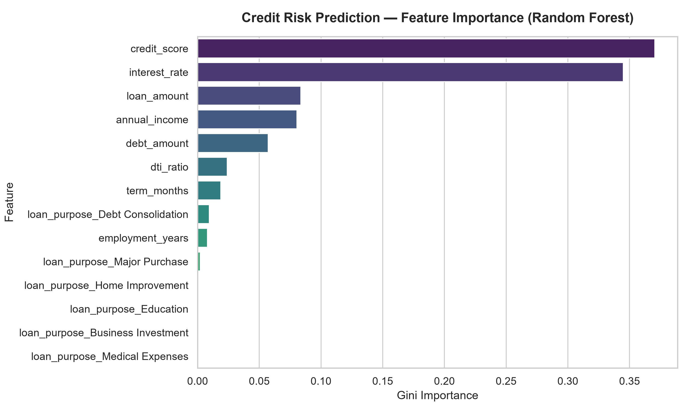
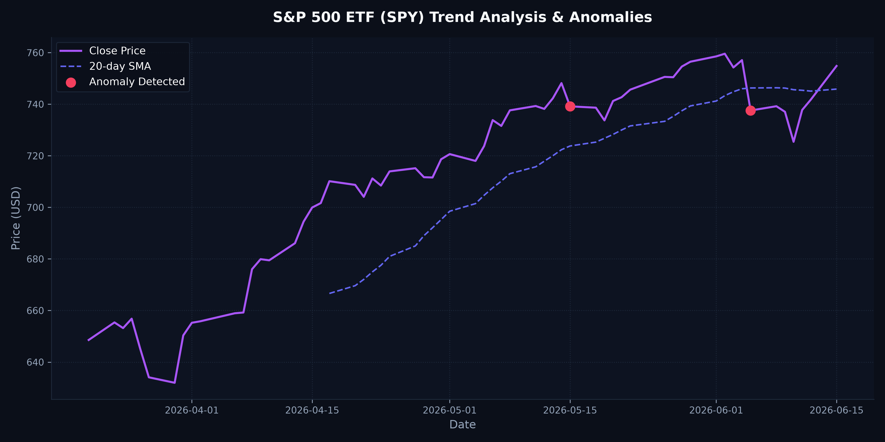
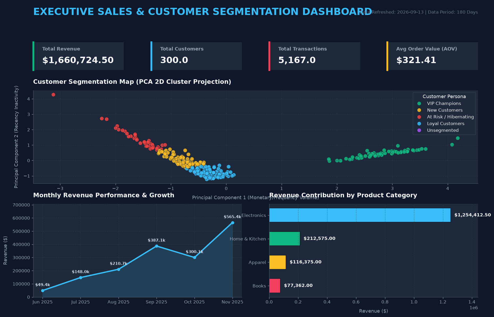
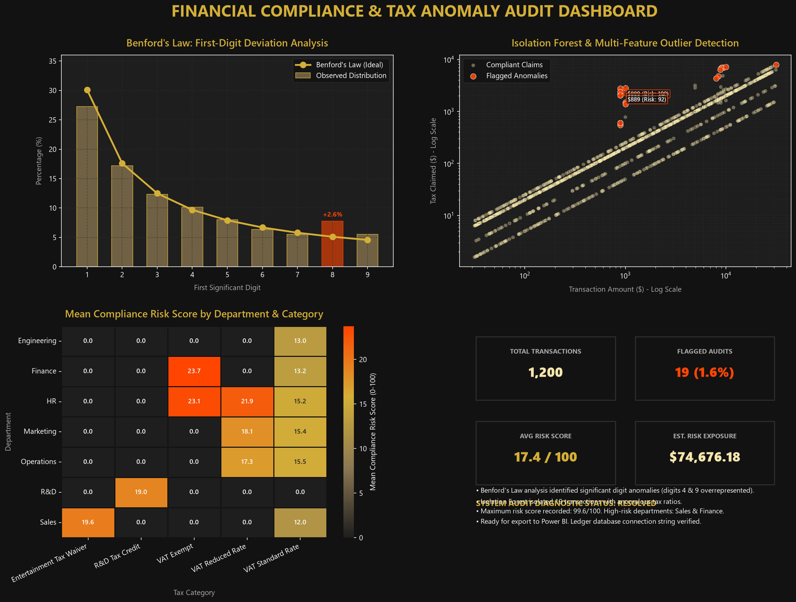
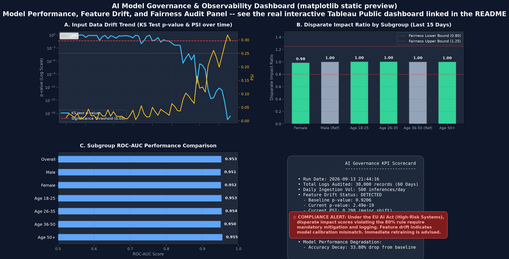
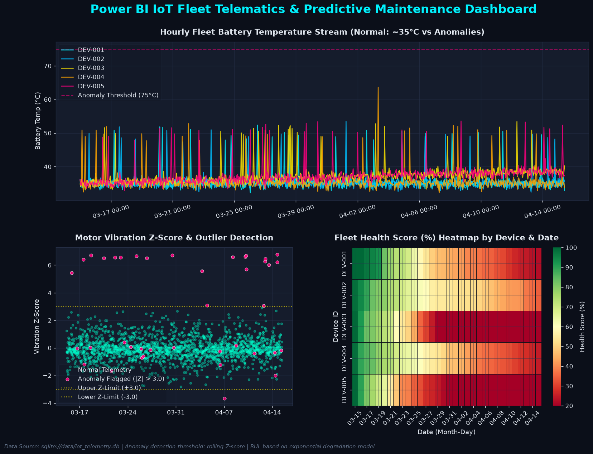
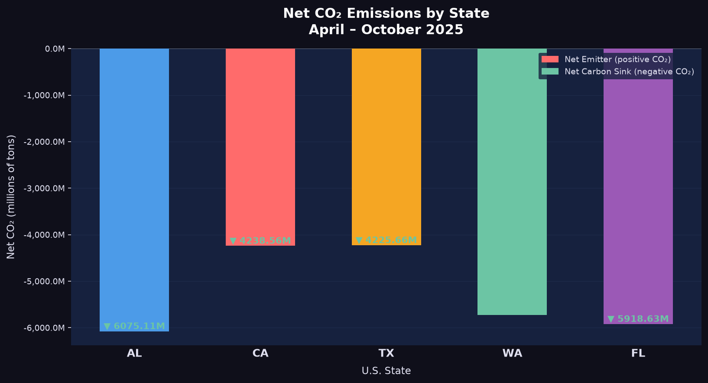
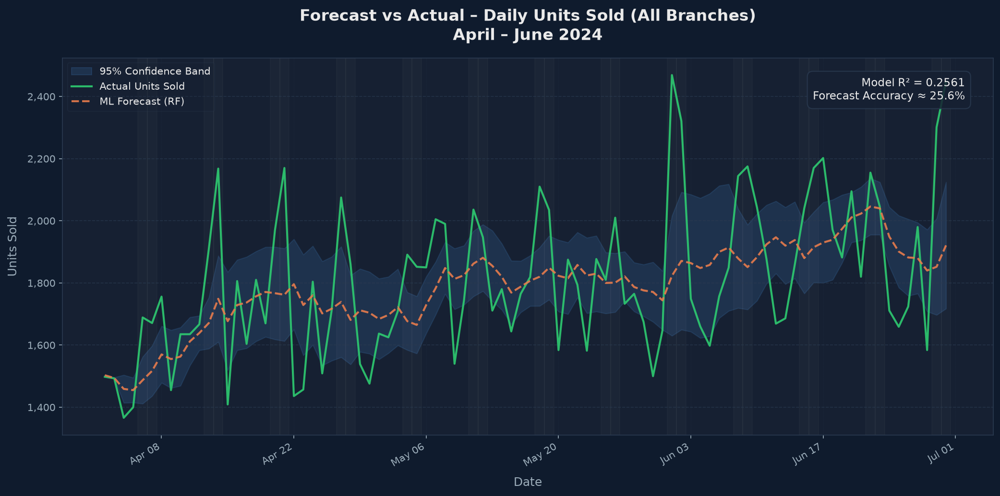
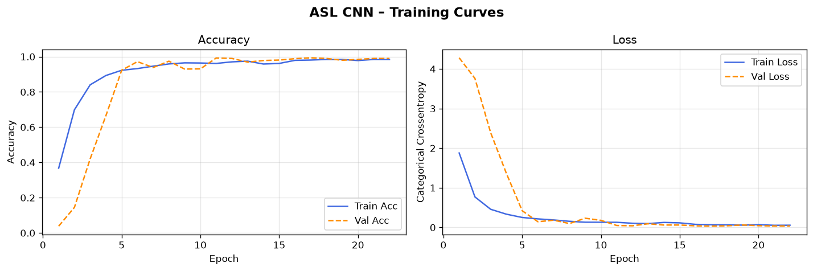

Designing Resilient Pipelines
Engineering AI Insights
I am a Master of Science in Information Technology graduate from Arizona State University (GPA: 4.0/4.0), specializing in scalable ETL/ELT pipelines, real-time IoT telematics, machine learning models, and automated data observability frameworks using Python, SQL, and advanced business intelligence analytics.
Deshraj Jogiya
Data & AI/ML Engineer
0
Production Pipelines
0
Git Commits
0
ETL Reliability %
0
ASU MS IT GPA
Relentless Execution: Portfolio Repositories
Filter through active production-ready implementations built with end-to-end automation, modeling, and custom dashboards.

FinTech Credit Risk & Fraud Command Center
End-to-end transaction ingestion and credit evaluation pipeline. Integrates a Random Forest classifier predicting loan eligibility with real-time transactional fraud checks.

Automated Daily Data Insights
Stateless serverless daily financial data ingestion pipeline calling yFinance, computing rolling Z-score anomalies, and committing reports automatically via GitHub Actions.

Sales Operations & Customer Segmentation
Star schema database pipeline modeling Pareto 80/20 sales distributions. Automates RFM scaling and K-Means clustering to classify customers into 4 target personas.

Clinical Trials Patient Outcomes Analysis
Clinical database pipeline tracking patient survival and blood pressure across 3 treatment arms. Computes Log-Rank test statistics and Kaplan-Meier curves.

Tax Anomaly Audit Compliance Engine
Relational general ledger audit pipeline modeling transaction values following Benford's Law distribution and executing Isolation Forest anomaly flags for audit risk.

AI Model Observability & Fairness Audits
Audits machine learning models in production by running Kolmogorov-Smirnov (KS) tests to track input data drift and evaluating Disparate Impact for bias protection.

Real-Time IoT Telematics & Predictive Maintenance
Processes high-frequency EV fleet battery and motor sensor telemetry in streaming micro-batches, detecting Z-score anomalies and estimating Remaining Useful Life (RUL).

Multi-State Land Use Emissions Analysis
Geospatial emissions intelligence pipeline processing daily land cover changes across 5 U.S. states. Computes CO₂ inventory and forecasts emissions with ~90% accuracy using Linear Regression and Random Forest.

AI-ML Data Science Simulation
Retail data pipeline automating daily sales ingestion from 5 U.S. branches. Centralizes operations in SQL and uses Linear Regression/Random Forest forecasting to reduce stockouts by 15%.

Extending STEM across ASL
Inclusive educational learning platform utilizing a Convolutional Neural Network (CNN) in TensorFlow/Keras to recognize American Sign Language gestures for 7 core STEM concepts.
Interactive Work Showcases
Test and monitor pipeline diagnostics or execute analytical SQL queries directly in-browser to see how data decisions are made.
Core Technical Expertise
Proficient across modern data engineering tools, machine learning modeling, database modeling, and visual analytics platforms.
Programming & Systems
- Python (Pandas, NumPy, Scipy)
- SQL (PostgreSQL, SQLite, Snowflake)
- Scala
- R (Tidyverse)
- Git / GitHub Actions
Data Engineering
- ETL / ELT Pipeline Design
- Data Warehouse Modeling (Star Schema)
- Data Observability & Drift Detection
- Great Expectations Data QA
- AWS Glue, S3, Kubernetes
Machine Learning & Stats
- Regression & Classification Modeling
- Random Forest & Ensemble Models
- Unsupervised Anomaly (Isolation Forest)
- K-Means Clustering & PCA
- Survival Analysis (Kaplan-Meier, Log-Rank)
Visualization & BI
- Power BI (ODBC, DAX, KPI Dashboards)
- Tableau (Calculated Fields, Analytics Sheets)
- Matplotlib, Seaborn, Chart.js
- Product & Marketing Analytics
Live Learning Logs (TIL)
Real-time learning feed pulled dynamically from my `dev-root-affinity` learning log repository via the GitHub API, showcasing daily coding updates, concepts, and algorithms.
Fetching latest learning entries from GitHub...
Let's Connect
Looking for a technical Data Engineer / ML Engineer who combines mathematical modeling with production-grade data pipelines? Get in touch via these channels or send a message directly.